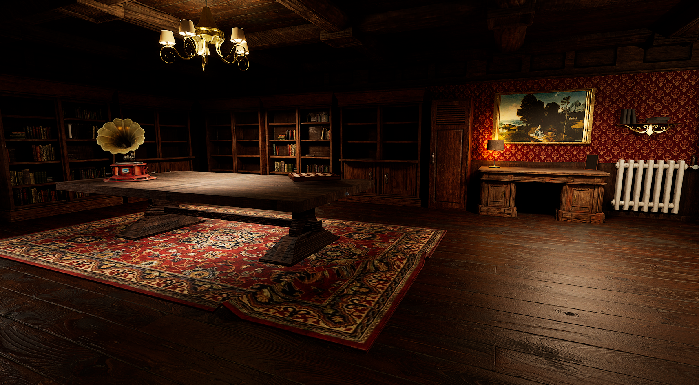

Escape
A psychological thriller made with Unreal Engine 5 (escape-room inspired).
Escape is a first-person thriller blending exploration, tension, and puzzle-solving. You wake up in a dark room with only a flickering flashlight. To survive, you must investigate, solve escape room-style puzzles, and uncover fragments of the story before time runs out.
Technical focus
Gameplay systems prioritize readable interaction in low light: flashlight-driven exploration, inspectable objects, and puzzle gates tied to narrative beats.
Key decisions
- Implicit time pressure via audio/visual cues instead of on-screen timers
- Modular puzzle actors with shared interaction interface
- Lighting volumes tuned per room for consistent readability
Workflow
Blockout → gameplay pass → lighting/audio polish → playtest for puzzle clarity and pacing.
Challenges
Atmosphere above all: lighting, sound, and pacing needed to support tension while keeping puzzles readable.
- Maintaining clarity in a dark environment (flashlight-driven exploration)
- Designing puzzle progression that reveals story beats
- Time-pressure mechanic that increases tension without explicit timers
What I built
- First-person exploration with flashlight-based navigation
- Escape room-style puzzles tied to investigation and story
- Unsettling ambiance and tension-driven pacing
Technologies used
- Unreal Engine 5
- Blueprint / C++ (Unreal)
Links


April demo — interaction loop and atmosphere pacing